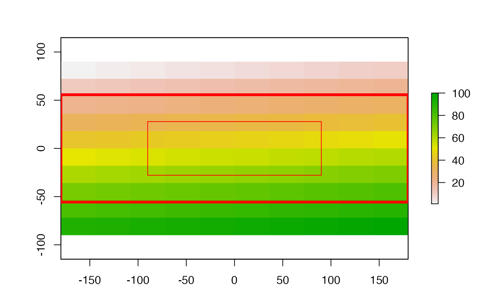
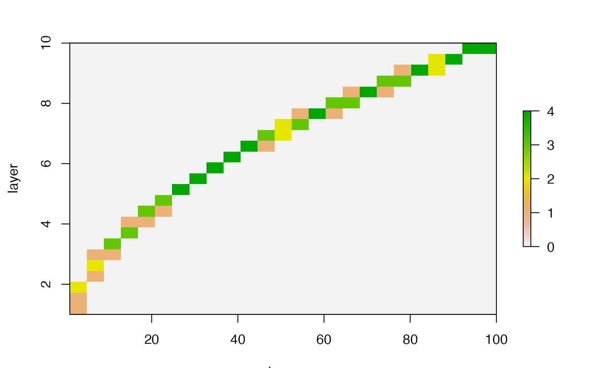
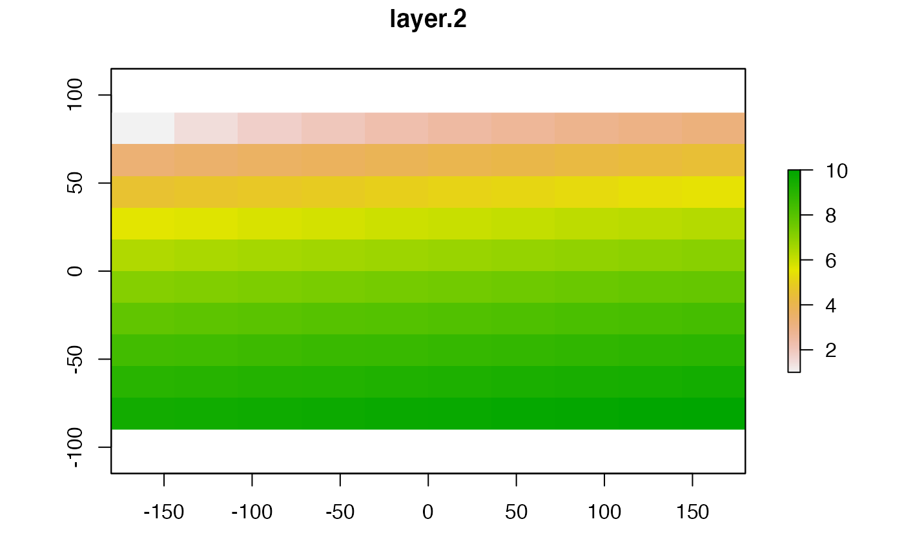
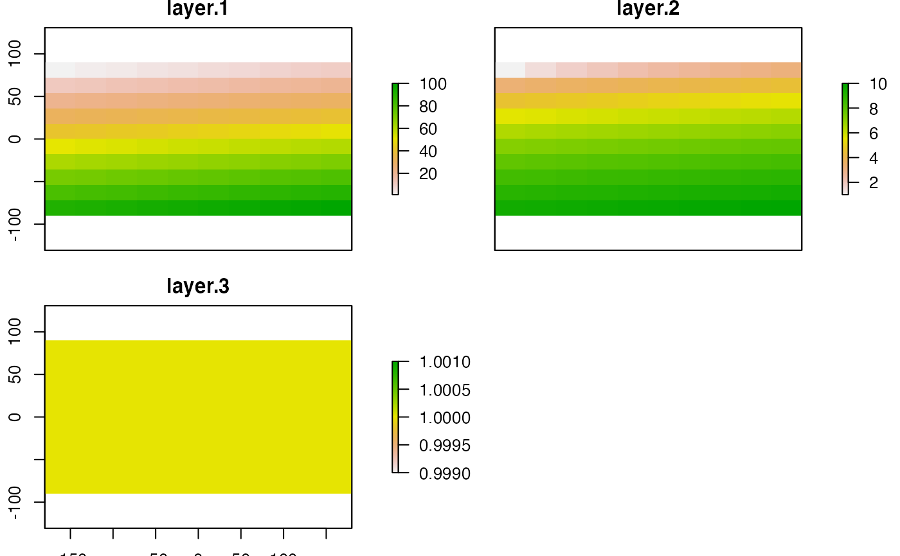
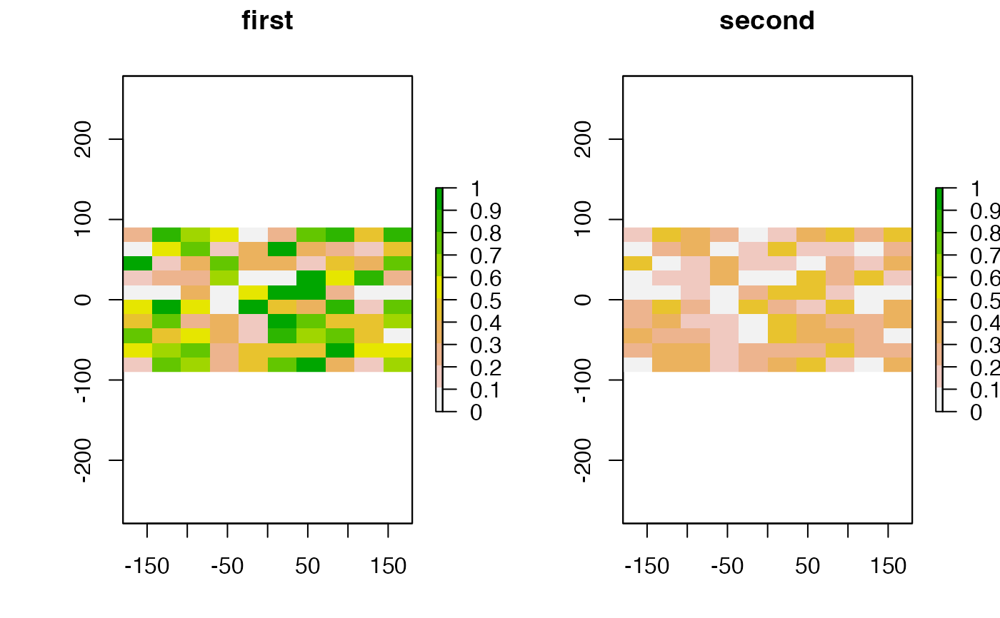
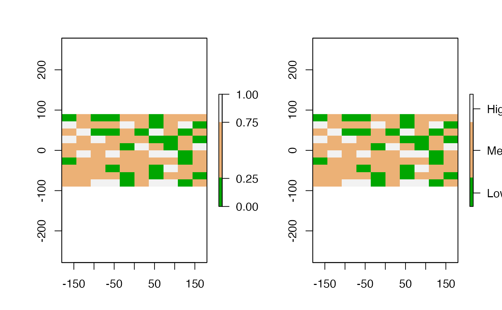
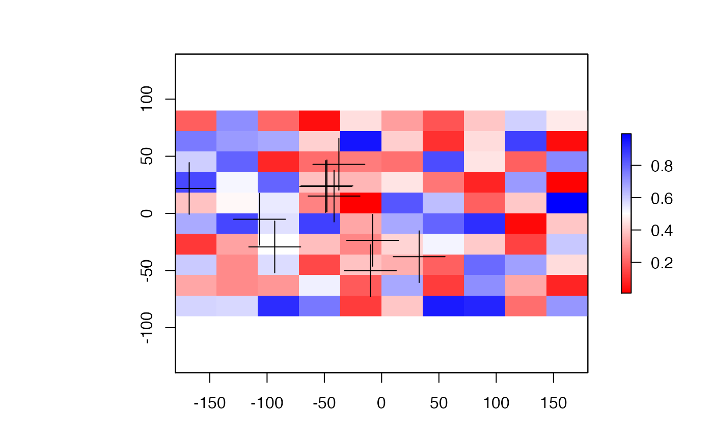
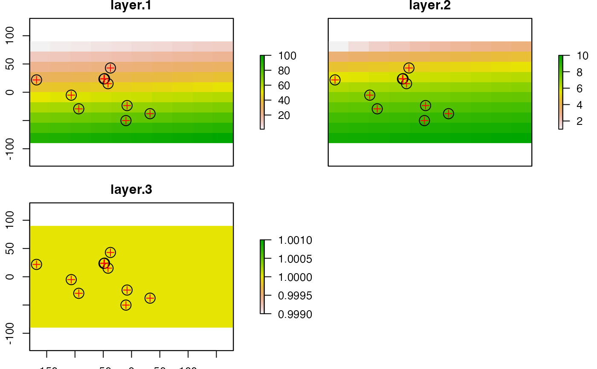

plot.RdPlot (that is, make a map of) the values of a Raster* object, or make a scatterplot of their values.
Points, lines, and polygons can be drawn on top of a map using plot(..., add=TRUE), or with functions like points, lines, polygons
See the rasterVis package for more advanced (trellis/lattice) plotting of Raster* objects.
# S4 method for class 'Raster,ANY'
plot(x, y, maxpixels=500000, col, alpha=NULL,
colNA=NA, add=FALSE, ext=NULL, useRaster=TRUE, interpolate=FALSE,
addfun=NULL, nc, nr, maxnl=16, main, npretty=0, ...)
# S4 method for class 'Raster,Raster'
plot(x, y, maxpixels=100000, cex, xlab, ylab, nc, nr,
maxnl=16, main, add=FALSE, gridded=FALSE, ncol=25, nrow=25, ...)Raster* object
If x is a RasterStack or RasterBrick: integer, character (layer name(s)), or missing to select which layer(s) to plot. If missing, all RasterLayers in the RasterStack will be plotted (up to a maximum of 16). Or another Raster* object of the same extent and resolution, to produce a scatter plot of the cell values.
integer > 0. Maximum number of cells to use for the plot. If maxpixels < ncell(x), sampleRegular is used before plotting. If gridded=TRUE maxpixels may be ignored to get a larger sample
A color palette, i.e. a vector of n contiguous colors generated by functions like rainbow, heat.colors, topo.colors, bpy.colors or one or your own making, perhaps using colorRampPalette. If none is provided, rev(terrain.colors(255)) is used unless x has a 'color table'
Number between 0 and 1 to set transparency. 0 is entirely transparent, 1 is not transparent (NULL is equivalent to 1)
The color to use for the background (default is transparent)
Logical. Add to current plot?
An extent object to zoom in a region (see also zoom and crop(x, drawExtent())
If TRUE, the rasterImage function is used for plotting. Otherwise the image function is used. This can be useful if rasterImage does not work well on your system (see note)
Logical. Should the image be interpolated (smoothed)? Only used when useRaster = TRUE
Function to add additional items such as points or polygons to the plot (map). Typically containing statements like "points(xy); plot(polygons, add=TRUE)". This is particularly useful to add something to each map when plotting a multi-layer Raster* object.
integer. Number of decimals for pretty lables on the axes
Graphical parameters. Any argument that can be passed to image.plot and to base plot,
such as axes=FALSE, main='title', ylab='latitude'
Optional. x-axis label)
Optional. y-axis label)
Optional. The number of columns to divide the plotting device in (when plotting multiple layers in a RasterLayer or RasterBrick object)
Optional. The number of rows to divide the plotting device in (when plotting multiple layers in a RasterLayer or RasterBrick object)
integer. Maximum number of layers to plot (for a multi-layer object)
character. Main plot title
Symbol size for scatter plots
logical. If TRUE the scatterplot is gridded (counts by cells)
integer. Number of columns for gridding
integer. Number of rows for gridding
Most of the code for the plot function for a single Raster* object was taken from image.plot (fields package).
Raster objects with a color-table (e.g. a graphics file) are plotted according to that color table.
raster uses rasterImage from the graphics package. For unknown reasons this does not work on Windows Server and on a few versions of Windows XP. On that system you may need to use argument useRaster=FALSE to get a plot.
# RasterLayer
r <- raster(nrows=10, ncols=10)
r <- setValues(r, 1:ncell(r))
plot(r)
e <- extent(r)
plot(e, add=TRUE, col='red', lwd=4)
e <- e / 2
plot(e, add=TRUE, col='red')

# Scatterplot of 2 RasterLayers
r2 <- sqrt(r)
plot(r, r2)
plot(r, r2, gridded=TRUE)

# Multi-layer object (RasterStack / Brick)
s <- stack(r, r2, r/r)
plot(s, 2)

plot(s)

# two objects, different range, one scale:
values(r) <- runif(ncell(r))
r2 <- r/2
brks <- seq(0, 1, by=0.1)
nb <- length(brks)-1
cols <- rev(terrain.colors(nb))
par(mfrow=c(1,2))
plot(r, breaks=brks, col=cols, lab.breaks=brks, zlim=c(0,1), main='first')
plot(r2, breaks=brks, col=cols, lab.breaks=brks, zlim=c(0,1), main='second')

# breaks and labels
x <- raster(nc=10, nr=10)
values(x) <- runif(ncell(x))
brk <- c(0, 0.25, 0.75, 1)
arg <- list(at=c(0.12,0.5,0.87), labels=c("Low","Med.","High"))
plot(x, col=terrain.colors(3), breaks=brk)
plot(x, col=terrain.colors(3), breaks=brk, axis.args=arg)

par(mfrow=c(1,1))
# color ramp
plot(x, col=colorRampPalette(c("red", "white", "blue"))(255))
# adding random points to the map
xy <- cbind(-180 + runif(10) * 360, -90 + runif(10) * 180)
points(xy, pch=3, cex=5)

# for SpatialPolygons do
# plot(pols, add=TRUE)
# adding the same points to each map of each layer of a RasterStack
fun <- function() {
points(xy, cex=2)
points(xy, pch=3, col='red')
}
plot(s, addfun=fun)
